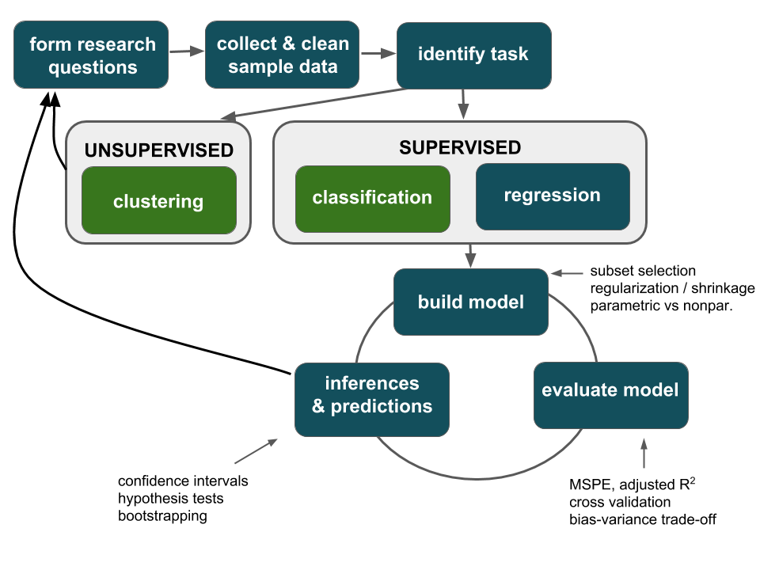
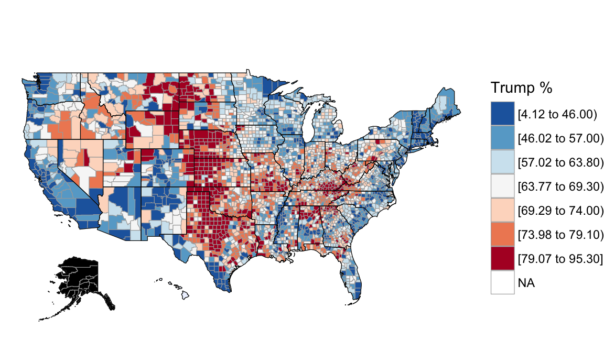

4.5 Day 3b: Sampling Distributions & Confidence Intervals
MOTIVATION
Thus far, our analyses have been exploratory in nature. We’ve used sample data to visualize relationships, build models of relationship trends, and evaluate those models:

Motivating Example
Scientists are developing a new pregnancy test. Doctors gave both the new test and the “gold standard” to a group of 100 pregnant women. The new test was accurate for 88 of these women whereas the standard test was only accurate for 86.
Exploratory question
What trends did we observe in our sample of data? Was the new test more accurate than the old in detecting pregnancy among pregnant women?Inferential question
Do these data provide enough evidence to conclude that the new test is better at detecting pregnancy among pregnant women?
The point: we’ll start looking beyond just the trends of our sample data and exploring how to use sample data to make inferences about the larger population of interest. The first step in reaching this goal is understanding sampling distributions, a reflection of the potential error in our sample information.
4.5.1 Simulation study: sampling variability
Recall the 2016 election returns for the population of “all” counties outside Alaska:
politics <- read.csv("https://www.macalester.edu/~ajohns24/data/electionDemographics16.csv")
And features of each county, such as median rent:

Based on these complete population data on all counties outside Alaska, we know that the relationship trend between Trump’s 2016 support and the median rent in a county is:
\[\text{perrep_2016} = 84.583 - 0.041 * \text{median_rent}\]

4.5.1.1 Different Samples, Different Estimates
FORGET THAT YOU KNOW ALL OF THE ABOVE.
Let’s pretend that we are working within the typical scenario - we do not have access to the entire population of interest. Instead, we need to estimate the true trend (regression line) using data from a randomly selected sample of counties. That is, we’ll use the sample model to estimate the true, but unknown population model.
Exercise 4.11 (Sampling and randomness in RStudio) We’ll be taking some random samples of counties throughout this activity. The underlying random number generator plays a role in the random sample we happen to get:
# Try the following chunk A FEW TIMES
sample_n(politics, size = 2, replace = FALSE)# Try the following FULL chunk A FEW TIMES
set.seed(155)
sample_n(politics, size = 2, replace = FALSE)
NOTE: If we set.seed(some positive integer) before taking a random sample, we’ll get the same results. This reproducibility is important:
- we get the same results every time we knit the Rmd
- we can share our work with others and ensure they get our same answers
- it would not be great if you submitted your work to, say, a journal, and weren’t able to back up / confirm / reproduce your results!
Exercise 4.12 (Class experiment) Let’s each take a sample and see what we get.
a. Let your seed be your birthday month (1 or 2 digits) and day (2 digits). For example January 5 is 105, September 10 is 910, October 5 is 1005, and December 10 is 1210. Set this in RStudio:
set.seed(YOURSEED)b. Take a random sample of 10 counties using the syntax above, and save it as sample1.
c. Construct and plot your sample model. How close is this estimate to the actual population model (perrep_2016 = 84.58 - 0.04 * median_rent)?
d. Take another sample of 10 counties, save it as sample2, and repeat part (c). How does this compare to the population model? The sample model calculated from sample_1?
e. Indicate your sample_1 and sample_2 intercept and slope estimates in this survey.
Exercise 4.13 (Comparing estimates) Import each student’s estimates from Google sheets:
results <- gsheet2tbl('https://docs.google.com/spreadsheets/d/1UxlQgAX5OWOz7DVfx2nxbPapnHMFlrpnwkxml6MVfk0/edit?usp=sharing')Compare the intercepts:
ggplot(results, aes(x = intercept)) +
geom_histogram(color = "white")Compare the slopes:
ggplot(results, aes(x = slope)) +
geom_histogram(color = "white")Compare the resulting models to the true population model in red:
ggplot(politics, aes(x = median_rent, y = perrep_2016)) +
geom_abline(data = results, aes(intercept = intercept, slope = slope), alpha = 0.75) +
geom_smooth(method = "lm", color = "red", se = FALSE)
4.5.1.2 Simulation Study
Our little experiment reflects very few of the more than \(_{3112}C_{10} > 2.3*10^{28}\) different samples of 10 counties that we could get from the entire population of 3112 counties!! In this section, you’ll run a simulation to study just how different these estimates could be.
Exercise 4.14 (Taking multiple samples) Whereas sample_n() takes a single sample of size \(n\) from a dataset, rep_sample_n takes multiple samples of size \(n\). To get a feel for it, take 4 samples of size 2. The replicate variable in the output indicates the sample (1, 2, 3, 4) to which each sampled case corresponds.
example1 <- rep_sample_n(politics, size = 2, reps = 4, replace = FALSE)
dim(example1)
example1
Exercise 4.15 (500 samples of size 10)
a. To get a sense for the wide variety of samples we might get, take 500 samples of size \(n\) = 10. Store these as samples_10.
set.seed(155)
samples_10 <- rep_sample_n(politics, size = 10, reps = 500, replace = FALSE)b. Each sample produces a different estimate of the population model between perrep_2016 and median_rent. Plot these 500 sample model estimates on the same frame:
ggplot(samples_10, aes(x = median_rent, y = perrep_2016, group = replicate)) +
geom_smooth(method = "lm", se = FALSE, size = 0.5)
Exercise 4.16 (500 sample slopes) Let’s focus on the slopes of these 500 sample models.
a. Save the 500 median_rent (slope) coefficients, stored under the estimate variable in the slopes_10 data frame.
slopes_10 <- samples_10 %>%
group_by(replicate) %>%
do(lm(perrep_2016 ~ median_rent, data=.) %>% tidy()) %>%
filter(term == "median_rent")
# Check it out
head(slopes_10)
dim(slopes_10)b. Construct a histogram of the 500 sample estimates of the true slope. This histogram approximates a sampling distribution of the sample slopes.
ggplot(slopes_10, aes(x = estimate)) +
geom_histogram(color = "white", binwidth = 0.01) +
lims(x = c(-0.20, 0.15))c. Describe the sampling distribution: What’s its general shape? Where is it centered? Roughly what is its spread? i.e., what is the range of estimates you observed?
Exercise 4.17 (Increasing sample size) Suppose we increased our sample size from n=10 to n=50. What impact do you anticipate this having on the sampling distribution of sample slopes:
- Around what value would you expect the distribution of sample slopes to be centered?
- What general shape would you expect the distribution to have?
In comparison to estimates based on the samples of size 10, do you think the estimates based on samples of size 50 will be closer to or farther from the true slope (on average)? Why?
Exercise 4.18 (500 samples of size 50) Test your intuition. Fill in the blanks to repeat the simulation process with samples of size n = 50.
# Take 500 samples of size n = 50
set.seed(155)
samples_50 <- rep_sample_n(politics, size = ___, reps = ___, replace = FALSE)
# Plot the 500 sample model estimates
ggplot(___, aes(x = ___, y = ___, group = ___)) +
geom_smooth(method = "lm", se = FALSE, size = 0.5)
# Store the 500 slope estimates
slopes_50 <- ___ %>%
group_by(___) %>%
do(lm(___ ~ ___, data = .) %>% tidy()) %>%
filter(term == "median_rent")
# Construct a histogram of the 500 sample slope estimates.
ggplot(___, aes(x = estimate)) +
geom_histogram(color = "white", binwidth = 0.01) +
lims(x = c(-0.20, 0.15))
Exercise 4.19 (500 samples of size 200) Finally, repeat the simulation process with samples of size \(n\) = 200.
# Take 500 samples of size n = 200
set.seed(155)
samples_200 <- rep_sample_n(politics, size = ___, reps = ___, replace = FALSE)
# Plot the 500 sample model estimates
ggplot(___, aes(x = ___, y = ___, group = ___)) +
geom_smooth(method = "lm", se = FALSE, size = 0.5)
# Store the 500 slope estimates
slopes_200 <- ___ %>%
group_by(___) %>%
do(lm(___ ~ ___, data=.) %>% tidy()) %>%
filter(term == "median_rent")
# Construct a histogram of the 500 sample slope estimates.
ggplot(___, aes(x = estimate)) +
geom_histogram(color = "white", binwidth = 0.01) +
lims(x = c(-0.20, 0.15))
Exercise 4.20 (Impact of sample size)
a. Compare the sampling distributions of the sample slopes for the estimates based on sizes 10, 50, and 200 by plotting them on the same frame:
# Combine the estimates & sample size into a new data set
simulation_data <- data.frame(
estimates = c(slopes_10$estimate, slopes_50$estimate, slopes_200$estimate),
sample_size = rep(c("10","50","200"), each = 500))
#Construct density plot
ggplot(simulation_data, aes(x = estimates, color = sample_size)) +
geom_density() +
labs(title = "SAMPLING Distributions")b. Calculate the mean and standard deviation in sample slopes calculated from samples of size 10, 50, and 200. NOTE: We call the standard deviation “standard error” here – an estimate’s deviation from the mean reflects its error.
simulation_data %>%
group_by(sample_size) %>%
summarize(mean(estimates), sd(estimates))c. Interpret the three standard errors.
a. For all sample sizes, the shape of the sampling distribution is ???.
b. As sample size increases:
The average sample slope estimate INCREASES / DECREASES / IS FAIRLY STABLE.
The standard deviation of the sample slopes INCREASES / DECREASES / IS FAIRLY STABLE.
c. Thus, as sample size increases, our sample slopes become MORE RELIABLE / LESS RELIABLE.
4.5.1.3 Reflection
Consider a simple population model
\[y = \beta_0 + \beta_1 x\]
In general, we don’t know \(\beta_0\) or \(\beta_1\). We are either working with (\(x,y\)) data on a sample of subjects from the broader population of interest or with a population that is in flux. Thus, our sample data give us an estimate of the population model:
\[y = \hat{\beta}_0 + \hat{\beta}_1 x\]
What we know about the sample model:
- our estimates \(\hat{\beta}_0\) and \(\hat{\beta}_1\) will vary depending upon what data we happen to get
- there is error in these estimates
These concepts are captured in the sampling distribution of a sample estimate \(\hat{\beta}\) (eg: \(\hat{\beta}_0\) or \(\hat{\beta_1}\)). Specifically, the sampling distribution of \(\hat{\beta}\) is a distribution of all possible \(\hat{\beta}\) we could observe based on all possible samples of the same size \(n\) from the population. It captures how \(\hat{\beta}\) can vary from sample to sample.
Impact of sample size
Below are sampling distributions of the sample slopes and sample models calculated from sample sizes of 10, 50, and 200 counties. Notice that as sample size n increases:
- there is less variability (and more consistency) in the possible estimates from different samples
- we are less likely to get estimates that are far from the truth
Standard error of \(\hat{\beta}\)
The standard deviation of the sampling distribution, which is called the standard error, measures the typical error in the sample slopes calculated from sample to sample. The greater the standard error, the less “reliable” the sample estimate. As we’ve seen, standard error decreases as sample size \(n\) increases. For example, in our simulation, our estimates based on samples of size 10, 50, & 200 had the following standard deviations:
sd(slopes_10$estimate)
## [1] 0.03433
sd(slopes_50$estimate)
## [1] 0.01141
sd(slopes_200$estimate)
## [1] 0.00528These observed standard deviations are merely approximations of the “true” standard error. In linear algebraic notation:
\[\begin{array}{ll} \text{population model}: & y = X \beta \\ \text{sample estimate of $\beta$}: & \hat{\beta} = \left(X^TX\right)^{-1}X^Ty \\ \text{standard error of $\hat{\beta}$}: & s.e.\left(\hat{\beta}\right) = \sqrt{\sigma^2\left(X^TX\right)^{-1}} \\ \end{array}\]
where \(\sigma^2\) is the variance of the residuals. When the linear regression model assumptions are met, the standard error \(\hat{\beta}\) is proportional to \(\frac{1}{\sqrt{n}}\) where \(n\) is the number of observations in the sample.
One hitch
The simulation above was just pretend. In practice we do NOT take 500 samples from the population - we take and use only ONE sample. Thus, we can’t actually observe the sampling distribution. However, the properties of the sampling distributions that we observed are guaranteed by Probability theory. IF the regression model assumptions are met and our sample size \(n\) is “big enough”, then the Central Limit Theorem (CLT) guarantees that the sampling distribution of all possible \(\hat{\beta}_i\) we could observe from all possible samples of size \(n\) is approximately Normally distributed around \(\beta_i\) with standard error \(s.e.(\hat{\beta}_i)\):
\[\hat{\beta}_i \stackrel{\cdot}{\sim} N(\beta_i, s.e.(\hat{\beta}_i))\]
The CLT for the sampling distribution of \(\hat{\beta}_i\) in pictures:

Connecting this to the 68-95-99.7 Rule, the CLT guarantees that (approximately)…
68% of samples will produce \(\hat{\beta}_i\) within 1 st. err. of \(\beta_i\)
95% of samples will produce \(\hat{\beta}_i\) within 2 st. err. of \(\beta_i\)
99.7% of samples will produce \(\hat{\beta}_i\) within 3 st. err. of \(\beta_i\) quantity

4.5.2 Reporting estimates with measures of error
Again, PRETEND we don’t have access to the population data and instead have to observe data on ONE sample of 50 counties. Be sure to use the exact code below!
# Sample 50 counties
set.seed(18)
sample_50 <- sample_n(politics, size = 50, replace = FALSE)Calculate a sample model estimate using sample_50:
sample_mod <- lm(perrep_2016 ~ median_rent, sample_50)
coef(summary(sample_mod))
## Estimate Std. Error t value Pr(>|t|)
## (Intercept) 86.78205 3.563150 24.355 1.141e-28
## median_rent -0.04489 0.006022 -7.455 1.483e-09
When interpreting and reporting our estimated sample model, it’s crucial to incorporate a measure of the potential error in these estimates. This is commonly done using standard errors & confidence intervals. In fact, we see confidence intervals reported in everyday news. Example: On June 18, 2017, Gallup reported that Trump’s approval rating is at 45% with a “margin of sampling error of \(\pm\) 3 percentage points at the 95% confidence level.”
Use this info to calculate a confidence interval for Trump’s approval rating among all Americans.
Does this evidence support the claim that less than half of Americans approve of the job Trump’s doing?
Exercise 4.22 (Estimating the standard error) Our sample estimate of slope \(\beta_1\) is \(\hat{\beta}_1 =-0.04489\). With only 1 sample of data (not 500), we can estimate \(\text{s.e.}(\hat{\beta}_1)\) by \(\sqrt{\hat{\sigma}^2(X^TX)^{-1}}\). This estimate is reported in the Std. Error column of the summary table.
- Report this error rounded to 5 decimal places.
- How close is this error estimate to the standard deviation we observed in the
slopes_50$estimate, 0.006022?
- Interpret the standard error. Does this seem big or small relative to the slope? (Looking ahead: confidence intervals provide some perspective here.)
- Calculate the range of values that are within 2 standard errors of OUR sample slope (\(\hat{\beta}_1\) = -0.04489):
\[\begin{split} \hat{\beta_1} \pm 2 s.e.(\hat{\beta}_1) & = \hspace{2in}\\ \end{split}\]
This is the 95% confidence interval (CI) for \(\beta_1\)! That is: though we don’t know \(\beta_1\) (pretend), we are “95% confident” that it falls within the range of this interval.
- We can get a more accurate confidence interval in RStudio:
confint(sample_mod)- Use the confidence interval to evaluate the claim that \(\beta_1 < 0\), ie. that there’s a negative association between the median rent and the Republican votes in 2016.
4.5.3 Confidence interval simulation study
Exercise 4.24 As we saw in our simulation study of 500 samples, some samples are lucky and some aren’t. Is sample_50 one of the lucky samples? That is, did this sample produce a confidence interval that contains the true slope \(\beta_1 = -0.0409\)?
# Set the seed to 2018
# Take 100 samples of size 50 from politics
samples_50 <-
# From each sample: calculate a confidence interval for the slope
# (Only keep the slope CIs, not the intercept CIs)
CIs_50 <-
# Give meaningful variable names
names(CIs_50) <- c("replicate", "variable", "lower", "upper")
# Define new variables:
# lucky = whether the CI covers -0.0409
# estimate = sample slope estimate
CIs_50 <-
# Check it out
head(CIs_50)
HINTS
# Set the seed to 2018
# Take 100 samples of size 50 from politics
samples_50 <- ___
# From each sample: calculate a confidence interval for the slope
# (Only keep the slope CIs, not the intercept CIs)
CIs_50 <- ___ %>%
group_by(___) %>%
do(___ %>% tidy()) %>%
filter(___)
# Give meaningful variable names
names(CIs_50) <- c("replicate", "variable", "lower", "upper")
# Define new variables:
# lucky = whether the CI covers -0.0409
# estimate = sample slope estimate
CIs_50 <- CIs_50 %>%
___(lucky = ___, estimate = ___)
# Check it out
head(CIs_50)
SOLUTIONS
# Set the seed to 2018
set.seed(2018)
# Take 100 samples of size 50
samples_50 <- rep_sample_n(politics, size = 50, reps = 100, replace = FALSE)
# From each sample: calculate a confidence interval for the slope
# (Only keep the slope CIs, not the intercept CIs)
CIs_50 <- samples_50 %>%
group_by(replicate) %>%
do(confint(lm(perrep_2016 ~ median_rent, data=.), level = 0.95) %>% tidy()) %>%
filter(.rownames == "median_rent")
# Give meaningful variable names
names(CIs_50) <- c("replicate", "variable", "lower", "upper")
# Define new variables:
# lucky = whether the CI covers -0.0409
# estimate = sample slope estimate
CIs_50 <- CIs_50 %>%
mutate(lucky = (lower < -0.0409 & upper > -0.0409), estimate = (upper + lower) / 2)
# Check it out
head(CIs_50)
Exercise 4.26 (Visualizing the simulated CIs) The code above produced 100 different 95% confidence intervals from 100 different samples of size 50. Check out a plot of these 100 intervals. In this plot, the 100 horizontal lines represent the 100 95% CIs. Each interval is centered at the corresponding sample slope \(\hat{\beta}_1\) (represented by a dot). Intervals that do NOT cover the true \(\beta = -0.0409\) are highlighted in red. Based on this plot, explain the meaning of “95% confidence”.
ggplot(CIs_50, aes(y = replicate, x = lower, color = lucky)) +
geom_segment(aes(x = lower, xend = upper, y = replicate, yend = replicate)) +
geom_point(aes(x = estimate, y = replicate)) +
lims(x = c(-0.20, 0.15)) +
geom_vline(xintercept = -0.0409)
Interpreting CIs & Confidence Levels
- The easy (but vague) way:
We are ‘95% confident’ that \(\beta_1\) is between the lower & upper bounds of this CI.
The correct way:
Using this CI method, approximately 95% of all possible samples will produce 95% CI’s that cover \(\beta_1\). The other 5% are based on unlucky samples that produce unusually low or high estimates \(\hat{\beta}_1\). Mathematically: \[P(\hat{\beta}_1 \in (\beta_1 \pm 2 s.e.(\hat{\beta}_1))) \approx 0.95\]The incorrect way:
We cannot say that “there’s a 95% chance that \(\beta_1\) is in the 95% CI.” Technically, \(\beta_1\) is either in the interval or it’s not, so the probability is simply 1 or 0. Mathematically: \[P(\beta_1 \in (\hat{\beta}_1 \pm 2 s.e.(\hat{\beta}_1))) \in \{0,1\} \] NOTE: This is a consequence of using frequentist methods. There’s a competing Bayesian philosophy which is outside the scope of this workshop.
Exercise 4.27 (Impact of sample size) Suppose we increase our sample size from 50 to 200 counties. What does your intuition say will happen to the 95% CIs?
- Will the new CIs be narrower or wider? Approximately what percentage of these will cover \(\beta_1 = -0.0409\)?
Check your intuition. Rerun the simulation with a sample size of 200.
Exercise 4.28 (Impact of confidence level) Traditionally, people typically use a 95% confidence level.
- Consider lowering the confidence level from 95% to 68%. What does your intuition say will happen to the CIs? Will the new CIs be narrower or wider?Approximately what percentage of these will cover \(\beta_1 = -0.0409\)?
- Similarly, what would happen if we increased the confidence level from 95% to 99.97% CIs?
Test your intuition. Repeat the simulation, changing the
levelargument in thedo()statement.
4.5.4 Extra
Above, you ran a simulation under a few different sample sizes. Any time you want to perform a similar operation multiple times, you can streamline the process by writing a function. Try the following.
Write a function named
add_ab()that calculates the sum of two given numbers,aandb.add_ab <- function(a,b){ #define add_ab as a function of two arguments, a & b a + b #what you want the function to do } #a right bracket to end the function definition # Try it out! add_ab(a=2, b=3) add_ab(a=1, b=-2)
Write a function that calculates more than one quantity, say the sum and difference of
aandb.new_ab <- function(a,b){ sum_ab <- a + b diff_ab <- a - b return(data.frame(sum_ab, diff_ab)) } #try it out! tryit <- new_ab(a=2, b=3) tryit tryit$sum_ab tryit$diff_ab
- Write a function that runs the CI simulation for a sample of size
n& confidence levelcl.